Hướng dẫn sử dụng cho cha mẹ
kidguard giúp cha mẹ đặt giờ dùng điện thoại cho con, khóa máy khi cần, xem con dùng app gì và nói chuyện với cả nhà. Trang này hướng dẫn từng bước trên máy của cha mẹ.
Bắt đầu
Làm 1 lần khi mới cài app.
kidguard làm được gì
| Việc | Ở đâu |
|---|---|
| Giới hạn số giờ dùng app mỗi ngày | Gia đình → chọn con → Khóa app |
| Đặt giờ được dùng, giờ ngủ | Gia đình → chọn con → thẻ Khung giờ |
| Khóa máy con ngay, thưởng thêm phút | Gia đình → chọn con → Khóa ngay / Thưởng phút |
| Xem con dùng bao lâu, mở app gì, tìm gì | Gia đình → chọn con → Báo cáo / Nhật ký |
| Được báo khi con tắt quyền, chỉnh giờ máy… | Gia đình → chọn con → Thông báo |
| Nhắn tin, gửi ảnh, gọi video (riêng hoặc cả nhà) | Tab Chat |
Màn hình chính có 3 tab ở dưới cùng: Gia đình · Chat · Cài đặt.
Cài app và đăng nhập
Cách làm
- Cài file kidguard (APK) trên máy của cha mẹ.
- Mở app, đọc Điều khoản sử dụng và Chính sách bảo mật, tích ô Tôi đã đọc và đồng ý, bấm Đồng ý và tiếp tục. Chỉ làm 1 lần.
- Chọn Cha mẹ.
- Bấm Đăng nhập bằng Google, chọn tài khoản Google của mình.

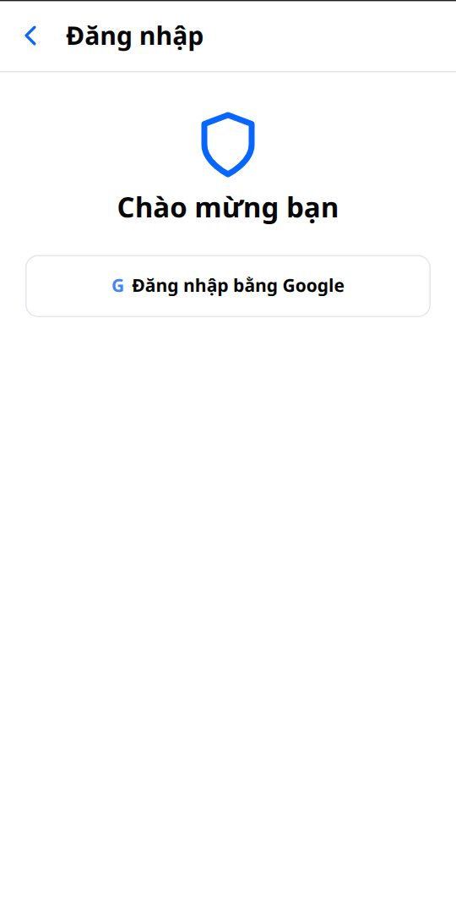
Tạo nhóm gia đình
Mỗi gia đình có 1 nhóm. Cha mẹ và con đều vào cùng nhóm.
Người đầu tiên: tạo nhóm
- Sau khi đăng nhập, bấm Tạo nhóm mới.
- Đặt tên nhóm, ví dụ "Nhà Bin", bấm Tạo nhóm.
- App hiện mã nhóm (ví dụ KG7-4QX) và mã QR. Bấm Tiếp tục.
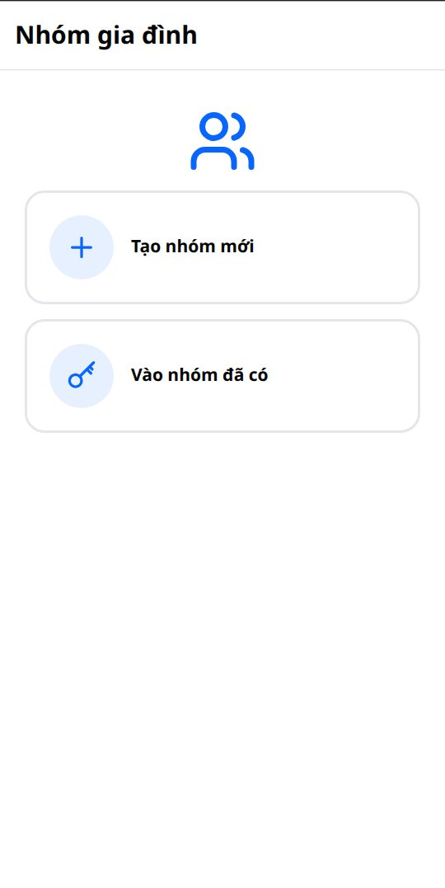
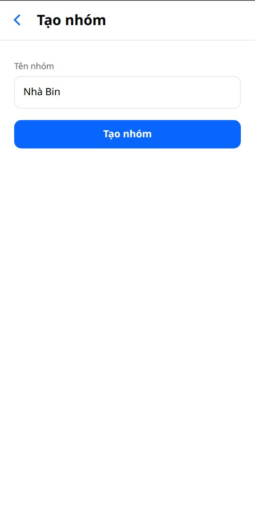
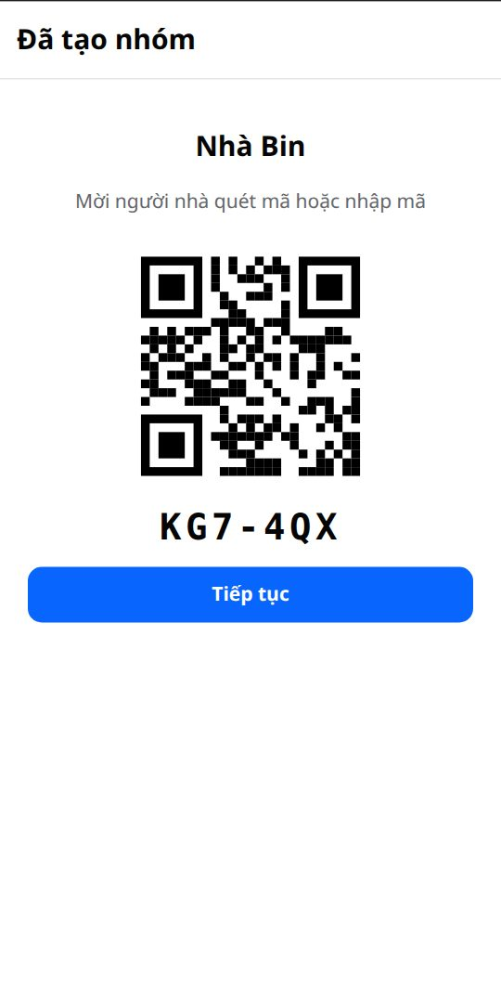
Cha hoặc mẹ thứ hai: vào nhóm có sẵn
- Cài app, chọn Cha mẹ, đăng nhập Google.
- Bấm Vào nhóm đã có, nhập mã nhóm hoặc quét QR.
- Chờ người trong nhóm duyệt (xem Duyệt người xin vào nhóm).
Thêm máy của con
Cách làm
- Trên máy con: cài kidguard, chọn Con.
- Máy con nhập mã nhóm hoặc quét QR trên máy cha mẹ (Cài đặt → Mã nhóm).
- Trên máy cha mẹ: tab Gia đình → mục Đang chờ duyệt → bấm Duyệt.
- Trên máy con: đọc màn "App ghi lại những gì", bấm Đồng ý, rồi cấp 3 quyền và cho app chạy nền. Xem chi tiết ở hướng dẫn cho con.
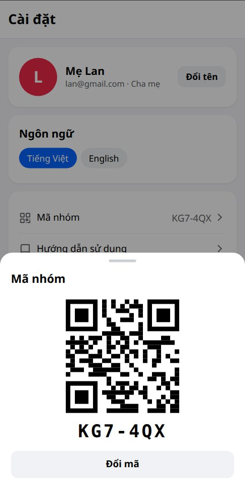
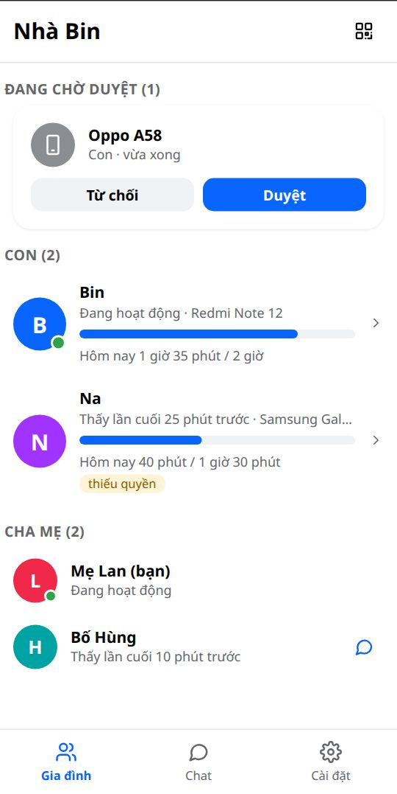
Gia đình
Tab Gia đình: danh sách người trong nhóm.
Xem danh sách thành viên
Tab Gia đình có 3 phần:
- Đang chờ duyệt: máy mới xin vào nhóm (chỉ hiện khi có).
- Con: mỗi máy con 1 dòng: tên, tên máy, đang hoạt động hay không, số giờ đã dùng hôm nay trên giới hạn.
- Cha mẹ: những người cha mẹ trong nhóm.
Duyệt người xin vào nhóm
- Có máy mới xin vào → cha mẹ nhận thông báo.
- Mở tab Gia đình, xem mục Đang chờ duyệt: tên máy và vai trò (Con hoặc Cha mẹ).
- Đúng máy nhà mình → Duyệt. Không biết máy nào → Từ chối.
Đổi tên, xóa máy con khỏi nhóm
Tên ban đầu là tên máy. Đặt tên dễ nhớ như "Bin", "Na".
- Tab Gia đình → bấm vào con.
- Bấm nút ⋯ ở góc trên bên phải.
- Chọn Đổi tên, hoặc Xóa khỏi nhóm (máy con thôi bị quản lý).
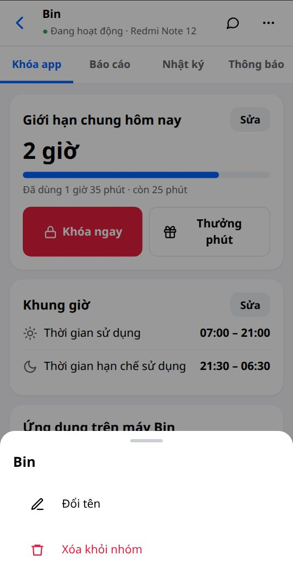
Giờ dùng và khóa máy
Gia đình → bấm vào con → tab Khóa app.
Cách app tính giờ
Mỗi máy con có luật riêng. Máy con bị khóa khi gặp 1 trong các trường hợp sau:
| Trường hợp | Khóa gì |
|---|---|
| Hết giới hạn chung trong ngày | Khóa các app đang bật công tắc. App tắt công tắc vẫn dùng được. |
| Ngoài Thời gian sử dụng | Khóa cả máy |
| Trong Thời gian hạn chế sử dụng (giờ ngủ) | Khóa cả máy |
| Cha mẹ bấm Khóa ngay | Khóa cả máy tới khi mở khóa |
Đặt giới hạn giờ mỗi ngày
- Gia đình → bấm vào con → tab Khóa app.
- Thẻ Giới hạn chung hôm nay → bấm Sửa.
- Chọn Mọi ngày như nhau, hoặc Từng thứ để đặt riêng từng ngày (ví dụ cuối tuần nhiều hơn).
- Gõ số giờ và số phút vào 2 ô (tối đa 12 giờ), hoặc bấm − / + để giảm/tăng 15 phút. Bấm Lưu.
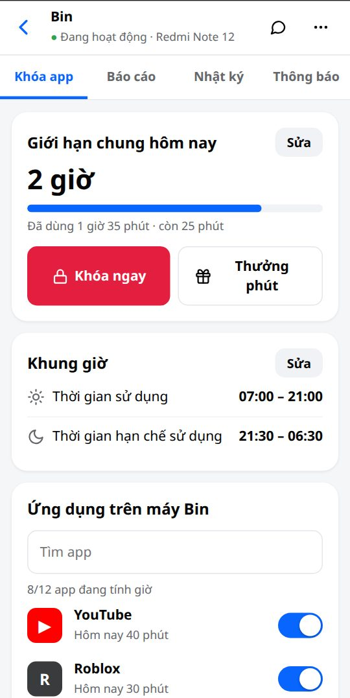
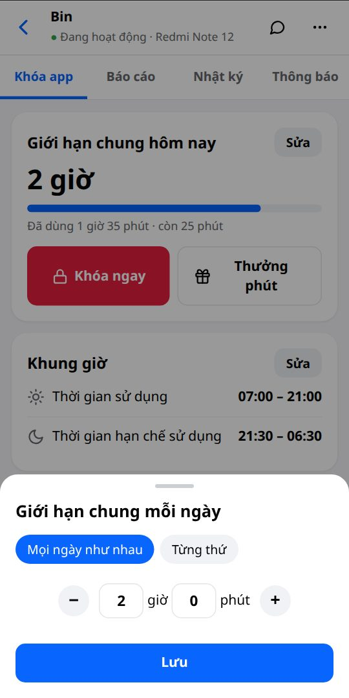
Thanh xanh dưới số giờ cho biết con đã dùng bao nhiêu, còn bao nhiêu.
Chọn app tính giờ
Kéo xuống thẻ Ứng dụng trên máy …. Mỗi app có 1 công tắc.
| Công tắc | Nghĩa là | Nên dùng cho |
|---|---|---|
| Bật (xanh) | App được tính vào giới hạn chung. Hết giờ thì khóa. | YouTube, TikTok, game |
| Tắt (xám) | Con dùng tự do, không tính giờ, không bị khóa khi hết giờ. | Học tập, Zalo, Máy tính, Camera |
Ô Tìm app giúp tìm nhanh khi máy có nhiều app. Dưới mỗi app ghi số phút con đã dùng hôm nay.
Đặt khung giờ (giờ được dùng, giờ ngủ)
- Thẻ Khung giờ → bấm Sửa.
- Thời gian sử dụng: con chỉ dùng máy trong khoảng này, ví dụ 07:00 – 21:00.
- Thời gian hạn chế sử dụng: khóa cả máy, ví dụ giờ ngủ 21:30 – 06:30.
- Muốn bỏ 1 dòng thì tắt công tắc bên phải dòng đó (hiện "Không đặt").
- Ở mục Ngày, chọn các thứ áp dụng (T2 … CN). Thứ màu xám là không áp dụng.
- Bấm Lưu.
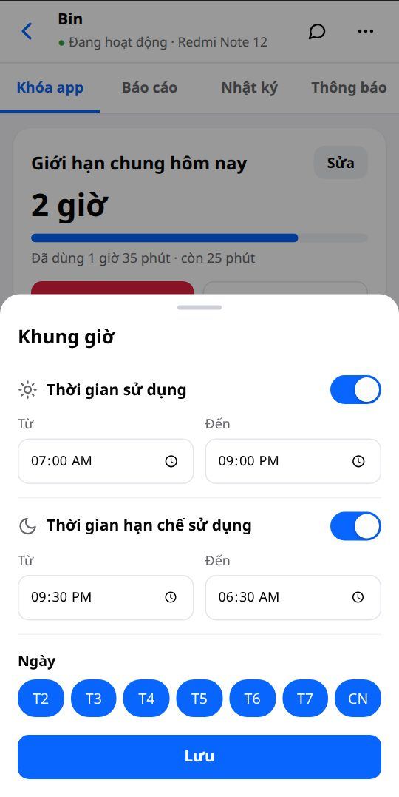
Khóa ngay
- Tab Khóa app → bấm nút đỏ Khóa ngay.
- Bấm Khóa ngay lần nữa để xác nhận. Máy con khóa sau vài giây (cần máy con có mạng).
- Muốn mở lại: bấm Mở khóa trên dòng đỏ "Máy đang khóa".
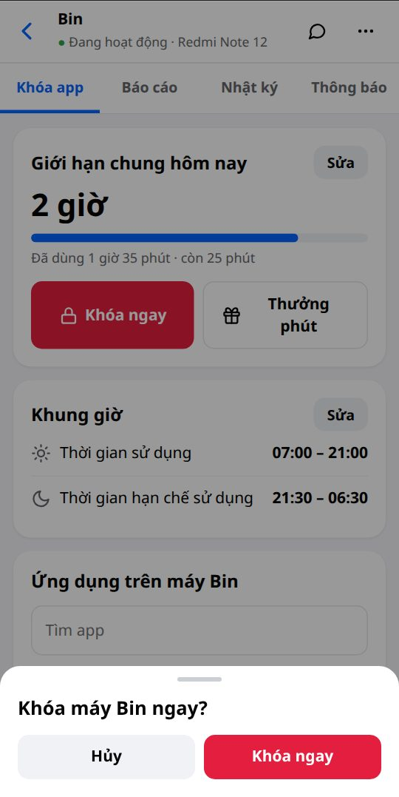
Thưởng thêm phút
- Tab Khóa app → bấm Thưởng phút.
- Chọn số phút trong danh sách (15, 30, 45, 60, 90, 120 phút).
- Bấm Thưởng. Giới hạn hôm nay tăng ngay.
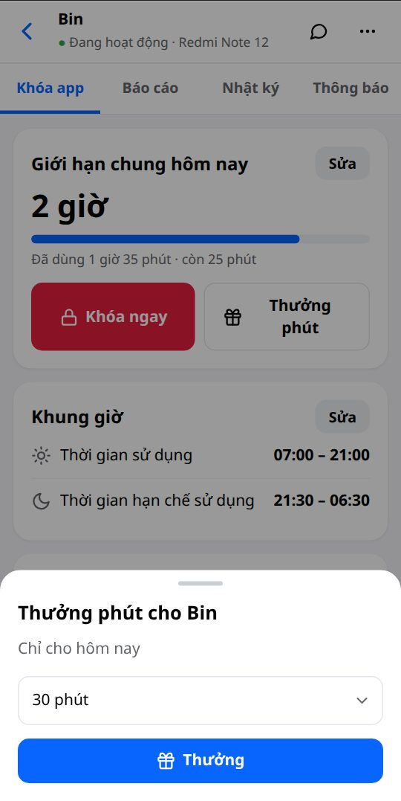
Theo dõi
Gia đình → bấm vào con → các tab Báo cáo, Nhật ký, Thông báo.
Xem báo cáo thời gian dùng
- Bấm vào con → tab Báo cáo.
- Thẻ Hôm nay: tổng thời gian đã dùng và giới hạn.
- Biểu đồ 7 ngày gần nhất: cột đỏ là ngày dùng quá giới hạn. Bấm 1 cột để xem riêng ngày đó.
- Theo app: số phút từng app. App ghi "không tính giờ" là app tắt công tắc.
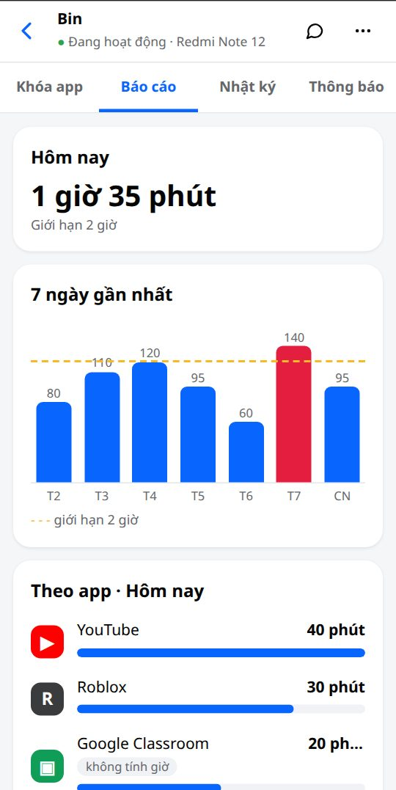
Xem nhật ký hoạt động
Nhật ký ghi theo giờ: app con đã mở, từ khóa con tìm, trang web, video YouTube đã xem và các cảnh báo.
- Bấm vào con → tab Nhật ký.
- Ô bên trái: chọn ngày (Hôm nay, Hôm qua, hoặc Chọn ngày… trong 3 tháng gần nhất).
- Ô bên phải: chọn loại (Tất cả, App, Tìm kiếm, Web, Video, Cảnh báo).
- Bấm 1 dòng để xem đầy đủ.
Cài thông báo cảnh báo
Chọn những việc cha mẹ muốn nhận thông báo. Mỗi máy con cài riêng.
- Bấm vào con → tab Thông báo.
- Bật công tắc những mục muốn được báo.
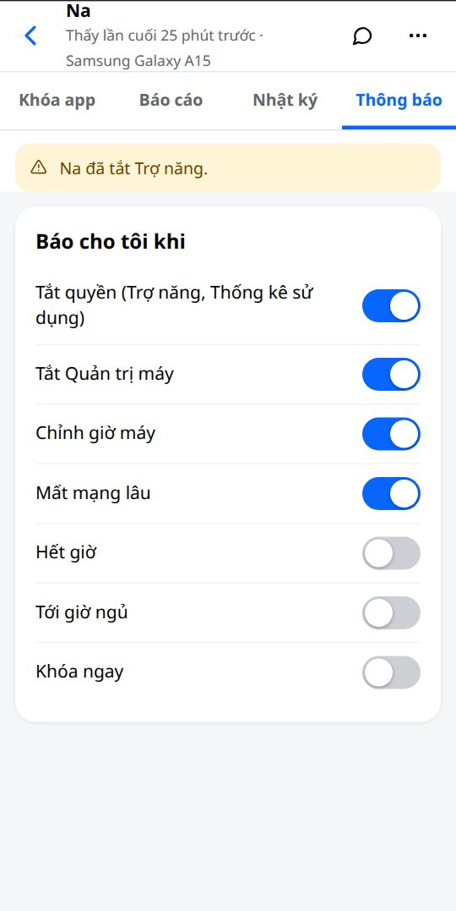
| Mục | Báo khi |
|---|---|
| Tắt quyền | Con tắt Trợ năng hoặc Thống kê sử dụng. App có thể không khóa được. |
| Tắt Quản trị máy | Con tắt quyền giữ app. Con có thể gỡ app. |
| Chỉnh giờ máy | Con đổi giờ trên máy để được dùng thêm. |
| Mất mạng lâu | Máy con có mạng lại sau thời gian dài mất mạng. |
| Hết giờ · Tới giờ ngủ · Khóa ngay | Máy con vừa bị khóa vì lý do đó. |
Chat và gọi video
Tab Chat, giống Messenger.
Nhắn tin, gửi ảnh
- Mở tab Chat. Dòng đầu là Cả nhà (chat nhóm), dưới là từng người.
- Bấm 1 dòng để mở. Gõ chữ vào ô Aa, bấm nút gửi.
- Gửi ảnh: bấm nút ảnh bên trái, chọn Chụp ảnh hoặc Chọn từ máy.
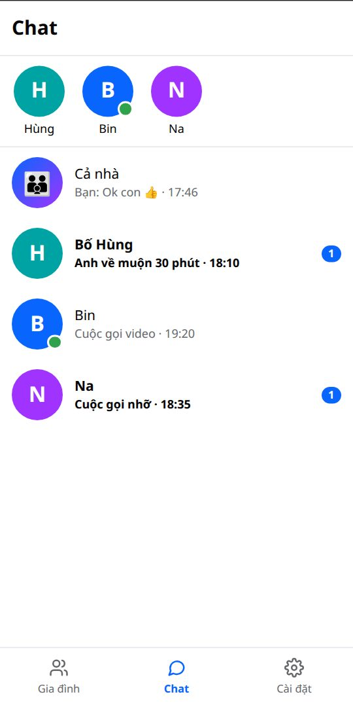
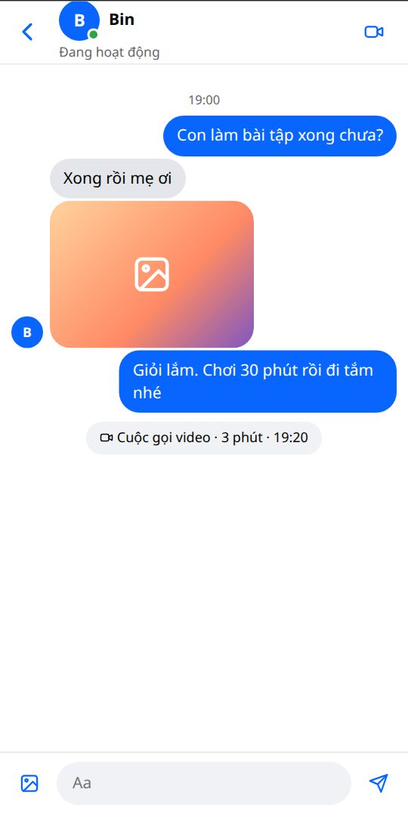
Gọi video 1–1
- Mở chat riêng với 1 người → bấm nút máy quay ở góc trên bên phải.
- Máy kia đổ chuông, kể cả khi app đang đóng.
- Trong cuộc gọi: tắt/bật mic, tắt/bật camera, đổi camera trước/sau, nút đỏ để cúp máy.
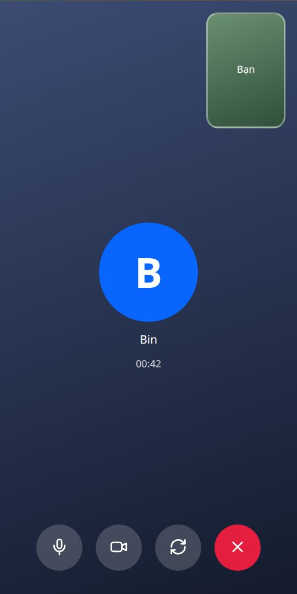
Gọi video cả nhà
- Mở chat Cả nhà → bấm nút máy quay ở góc trên bên phải.
- Mọi người trong nhóm đổ chuông. Ai bấm Nghe thì vào cuộc gọi.
- Màn hình chia ô, mỗi người 1 ô có tên. Tối đa 8 người.
- Bấm nút đỏ để rời. Cuộc gọi vẫn chạy cho những người còn lại.
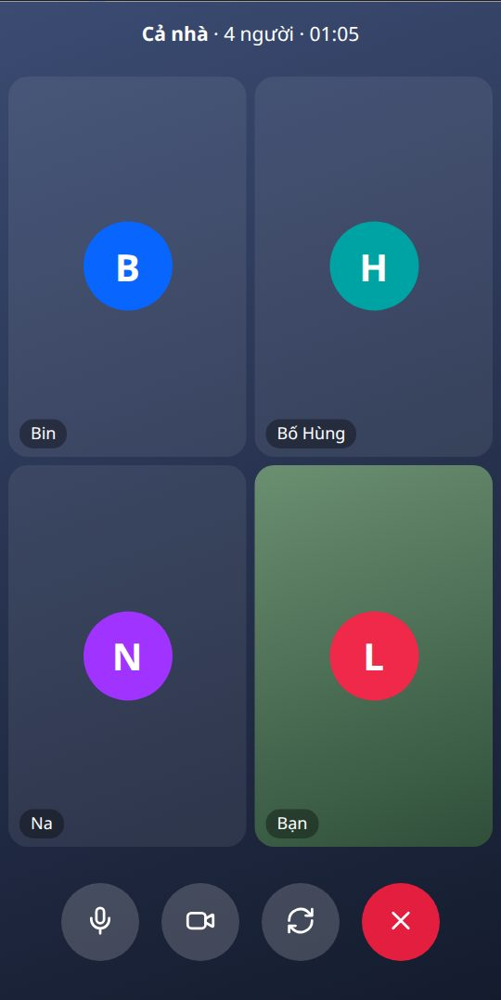
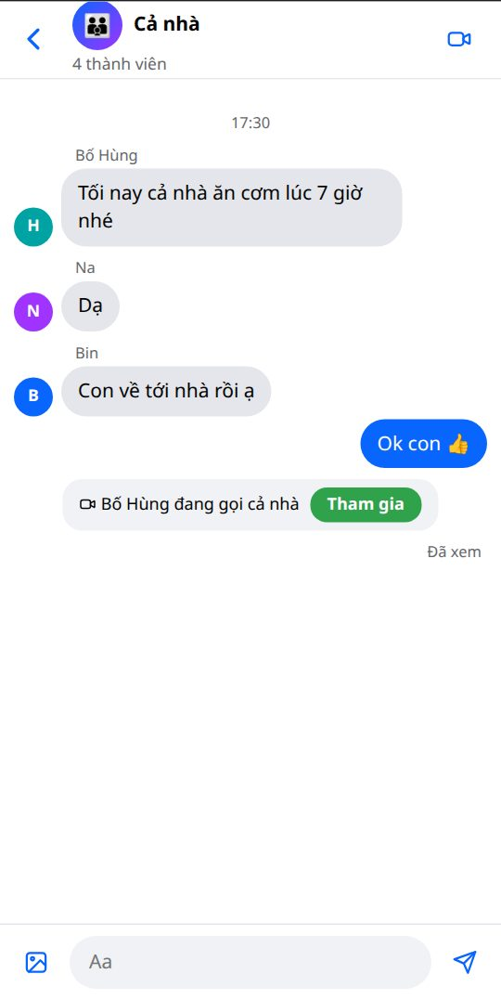
Cài đặt
Tab Cài đặt.
Tên, ngôn ngữ, đăng xuất
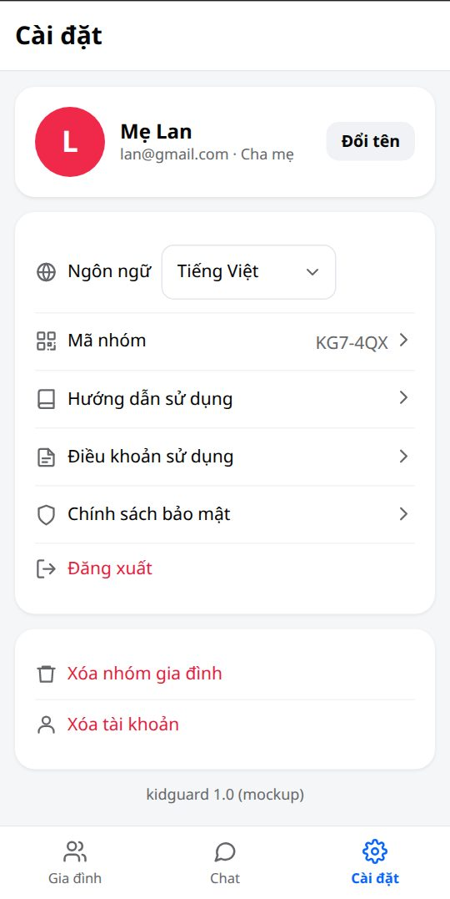
- Đổi tên: tên của mình mà cả nhà thấy.
- Ngôn ngữ: bấm ô bên phải, chọn Tiếng Việt hoặc English. Chỉ đổi trên máy này.
- Hướng dẫn sử dụng: mở trang này.
- Điều khoản sử dụng, Chính sách bảo mật: đọc lại bất cứ lúc nào.
- Đăng xuất: thoát tài khoản trên máy này. Đăng nhập lại bằng cùng tài khoản Google là vào lại nhóm, không cần duyệt.
Xem và đổi mã nhóm
- Cài đặt → Mã nhóm: hiện mã và QR để người khác quét.
- Mã bị lộ → bấm Đổi mã → xác nhận. Mã cũ hết dùng ngay.
Xóa nhóm gia đình, xóa tài khoản
Xóa nhóm gia đình
- Cài đặt → Xóa nhóm gia đình.
- Gõ đúng tên nhóm, bấm Xóa nhóm.
Mọi cha mẹ trong nhóm đều xóa được. Xóa hết thành viên, luật giờ, báo cáo, nhật ký, tin nhắn, ảnh. Máy con quay về màn nhập mã nhóm.
Xóa tài khoản
- Cài đặt → Xóa tài khoản → Xóa tài khoản.
Bạn rời nhóm, dữ liệu tài khoản trong kidguard bị xóa. Tin nhắn đã gửi vẫn còn. Tài khoản Google không bị xóa.
Chi tiết dữ liệu bị xóa: Chính sách bảo mật.
Khi gặp sự cố
Câu hỏi thường gặp.
Máy con không khóa
- Tab Gia đình: con có nhãn thiếu quyền không? Có → trên máy con bấm Bật lại ở thông báo đỏ, bật kidguard trong Trợ năng.
- Kiểm tra công tắc của app đó đã bật chưa (tab Khóa app).
- Kiểm tra máy con cho kidguard chạy nền: Cài đặt pin → kidguard → Không giới hạn (cách làm theo hãng ở hướng dẫn cho con).
- Vẫn không được → gỡ kidguard trên máy con, cài lại, nhập mã nhóm, cha mẹ duyệt lại.